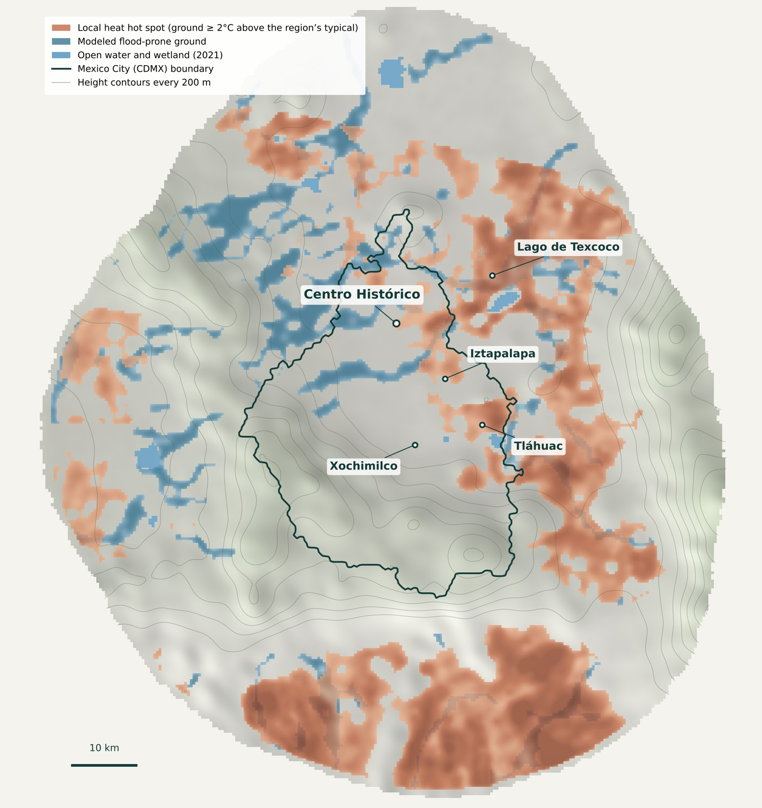
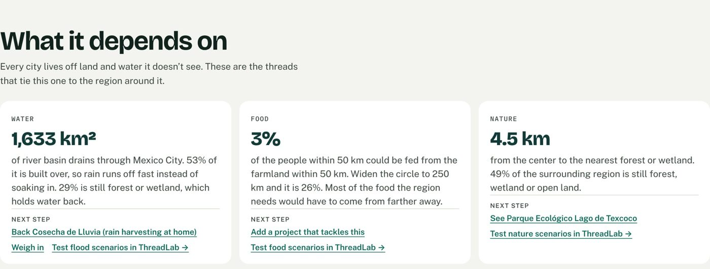
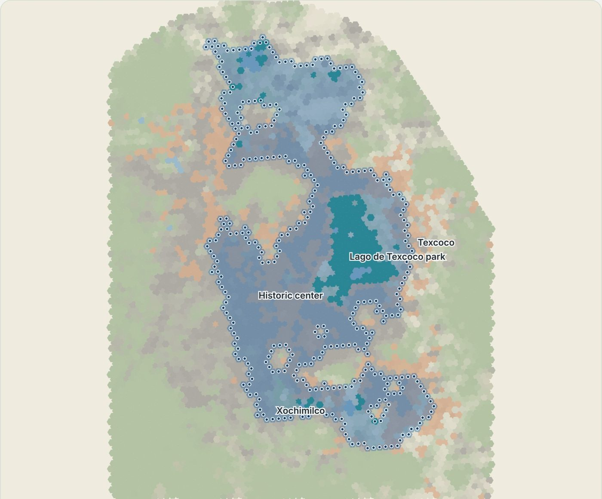
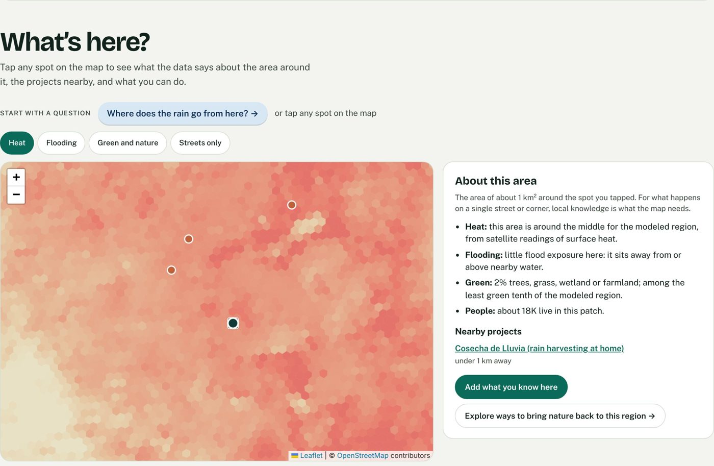
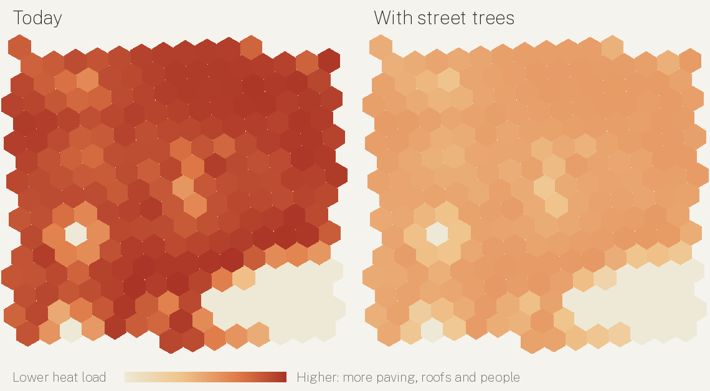

About Threadlands
Cities don’t run on their own.
By 2050, nearly 7 in 10 people are expected to live in cities. That future is already on its way. What is still open is whether those cities can stand up to the heat, floods and droughts that will come with it.
Every city is tied to the land around it. Rivers and aquifers bring its water. Farmland feeds it. Forests and wetlands cool its air, soak up its floods and shelter the wildlife it shares. Most people living in a city never see these threads, and most plans stop at the city limits.
See the threads

If you plan cities, manage land or work on climate, you have seen what happens when a city is planned as if it stood alone. The work now is to make cities behave more like living systems, with more green, more water held in place and more room for wildlife, and to plan them together with the land that keeps them alive. It is urgent, and Threadlands is built to help.
What Threadlands gives you
Any place on one map. A city and the land it depends on, built from open satellite and global data for anywhere on Earth.

Mexico City’s profile: the river basin, farmland and wild places it depends on. A test against the future. See how a place holds up to heat, flooding and drought today and in the climate of 2050.

Mexico City in 2050, with wetlands on the old lakebed: one modeled idea. - A design studio. Add urban farms, parks, ponds, street trees and transit, block by block, with costs adjusted to each country.
Readings from space. Fresh satellite surface temperatures for every city in the library, twice a week.

Local heat hot spots in Iztapalapa, from Landsat surface temperature. Open methods. Every source and assumption is written out on the Method page.

A worked example from the method page: street trees and heat load. Read the method →
Get involved
- Look up your city, or any place you care about.
- Design a change in Studio and see what it does by 2050.
- Planners, researchers and community groups: tell us what the model gets wrong about your place, or bring Threadlands to a project in your city.
- Builders: GIS analysts, developers, designers and climate scientists who want to help build Threadlands, we would like to hear from you.

Founder
Robert Bartolucci
Robert has spent more than 15 years at the intersection of infrastructure planning, corporate sustainability and climate science. His focus is making cities more resilient by planning them together with the water, farms and wild places around them.
Contact
For questions, partnerships or a project in your city, reach us through our founder on LinkedIn. We are also looking for people who want to help build Threadlands: in GIS, ecology, planning, engineering and design.
Urban population projection: United Nations, World Urbanization Prospects 2018.